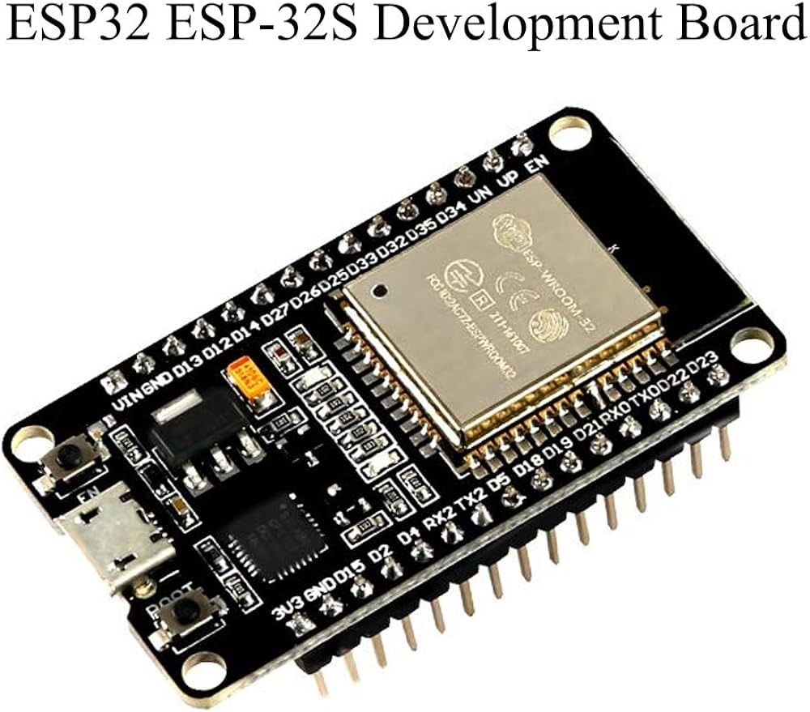
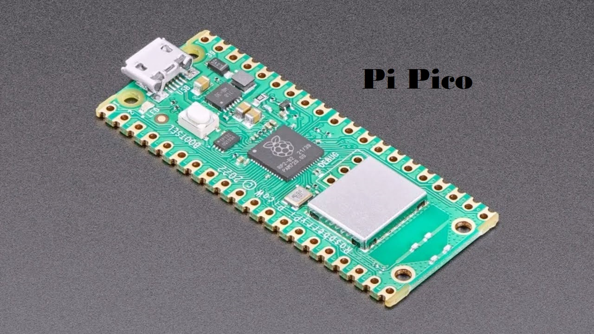

Greening Urban Environments
DIY Instructions Project 4
Guidelines - Project Four - Contact Simon Smith
Hardware to control your GutterGrow
It is important to note that the object of the hardware design is NOT to create a technically sophisticated solution but a low cost utility (easy) solution made from inexpensive readily available parts
The suggestions for hardware to control your GutterGrow are based upon:
- Low cost (say less than £20 for a basic implemetation)
- Wide availability of hardware parts and connectors (UK and international)
- Strong hardware and software support networks and tools
- Utility construction - simple DIY assembly and connection of readily available inexpensive parts
- Control of system from many types of client device over wifi
- Feedback and alerts to many types of client device over wifi and/or bluetooth
- Safe low power and/or solar powered system (12v or 5v DC supply for system)
Based on the above it is suggested that the microcontrollers from Espressif and the Raspberry Pi Foundation can provide suitable microcontroller hardware meeting requirements.
The example system below is based on the ESP32 series from Espressif along with readily available low cost sensors and actuators.
However the software tutorials, example code and support suggested are based on micropython running on ESP32 microcontrollers and therefore should be relatively easy to port to other microcontrollers or SBCs (Single Board Computers) capable of running micropython.
The vitally important task is the control of the irrigation and nutrient flow through the GutterGrow system. This task is simplified by the cascading of the gutters so that irrigation and nutrient flow can be introduced as 'flow needed' at the highest level of a GutterGrow system and then detected as 'flow complete' at the lowest level.
An example hardware system for irrigation can be implemented with the following parts:
- 12v or 5v DC power source (battery or DC adaptor)
- Microcontroller
- 5v or3.3v relay for switching 12v DC
- 12v DC valve (if controlling mains or other pressurised water supply) or
- 12v DC pump (if pumping required from water tank or other unpressurised store)
- Non conductive inexpensive substrate for mounting parts (example uses a small wood board)
- Connection wire
- Waterproof enclosure if outdoor operation required
- Irrigation tubing and drippers compatible with chosen pump or valve
